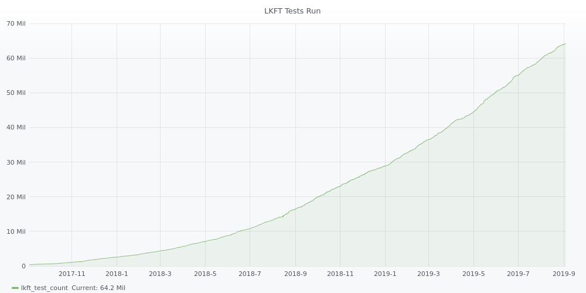

Your browser doesn't support the features required by impress.js, so you are presented with a simplified version of this presentation.
For the best experience please use the latest Chrome, Safari or Firefox browser.
LKFT Reprise
- Architectures: arm32, arm64, i386, x86_64
- Hardware: X15, DragonBoard 410c, Juno, HiKey, x86_64 servers
- QEMU: x86* on x86_64 servers, arm* on SynQuacer arm64 hosts
- Linux Branches:
- LTS: 4.4, 4.9, 4.14, 4.19
- Latest stable (5.2, 5.3), mainline, next
- Tests: LTP, libhugetlbfs, perf, v4l2, kvm-unit-tests, s-suite (i/o benchmark), kselftests
- Most tests run in all environments on every push for a total of ~25,000 tests per push

Build - Boot - Test - Triage - Report
OpenEmbedded build
Jenkins based
Full OS build for every kernel/board combination
Fixed and shared build capacity
Build scripts colocated with job config
Tired
Builds can be slow
Builds can be queued
Ancillary kernels require a full build (e.g. KASAN), so we don’t do them
Builds are hard to reproduce outside of jenkins environment due to coupling
Changes difficult to test
Kernel builds use bitbake; log is enormous; config is derived
KernelCI-style builds
Root filesystem build independently from kernel
Kernel builds are independent, native, fast
Docker-based build environments
Build servers scale dynamically
0 builds, 0 build servers. 20 builds, 20 build servers.
Artifacts stored and served from cloud storage directly
Wired
Build times become consistent, and fast
Ancillary kernels possible and trivial
Builds are easily reproducible outside of jenkins environment
Staging environment provides ability to test changes to system
Kernel build is simple; users will not have to deal with unfamiliar tools
Boards boot using either u-boot or fastboot
Fastboot boards use system images with kernel baked in
Juno-r2 flashes firmware every run to guarantee correctness
LAVA job templates colocated with jenkins config
Tired
Bisection difficult due to per-board and rootfs requirements
“fastboot flash” slow, and causes contention on dispatcher
Juno spends 10 minutes re-flashing firmware every run
LAVA job generation is not portable or reusable
LAVA jobs all take a rootfs parameter and a kernel parameter
If a baked rootfs is required, it is done in the dispatcher
Fastboot flash is avoided where possible
Use u-boot rather than fastboot where possible
LAVA job generation abstracted to its own tool
Wired
Better fastboot provisioning options: inline image building and fastboot-nfs
KernelCI compatibility
LAVA job generation is sharable and portable
Bisection becomes “easy”
Tests generally live in Linaro/test-definitions on GitHub
Test binaries usually built into root filesystems
Handy for kselftest….
Tired
Space constraints in rootfs (because we only get 1!)
Kselftest built along with kernel and overlayed into rootfs via LAVA at runtime
Possible to have different rootfs for different tests, just as with kernels
Wired
TAP parsing directly in LAVA
Kernel log parsing in SQUAD
Template based reports come directly from SQUAD
Bugs tracked at bugs.linaro.org under product “Kernel Functional Testing”
Known issues managed in SQUAD to control for failing and flaky tests (see qa-reports-known-issues repo)
Some reports (stable) generated using SQUAD API and python
Most upstream reports are manually curated
Most bugs are manually reported
Tired
Generic reporting
Naive reports
Limited ability to expres
Valuable data gathered but stuck in giant database
Build (or find!) analytics layer
Perform cross branch and cross time analysis
Generate fine grained, custom reports
Support arbitrary frequency
Wired
Achieve very high signal:noise ratio
Support individual developers, and their personal preferences